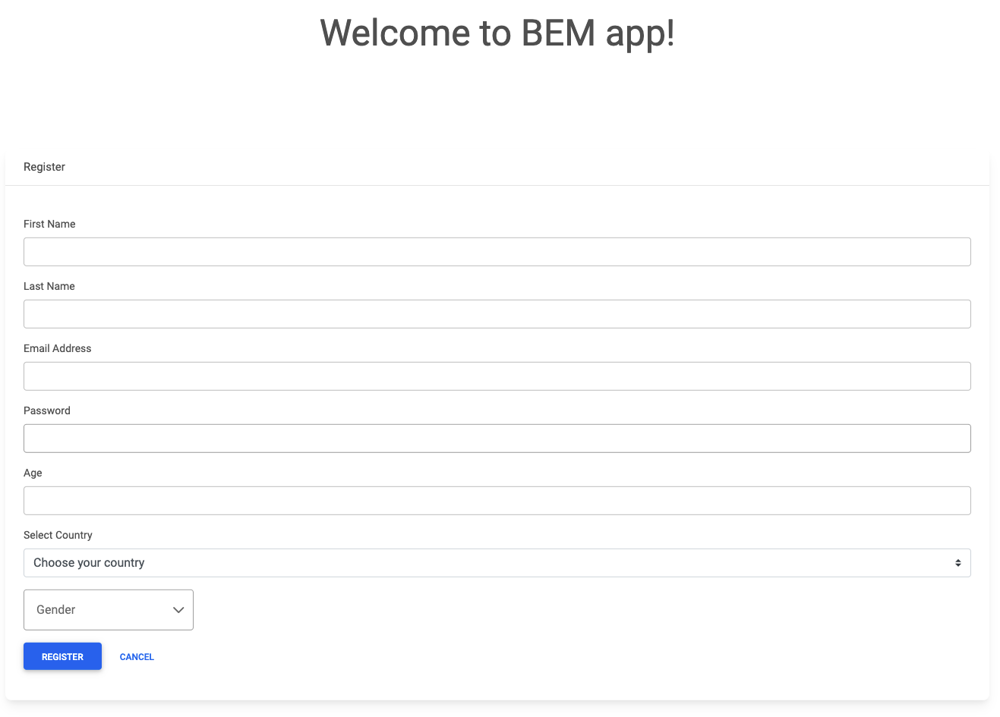
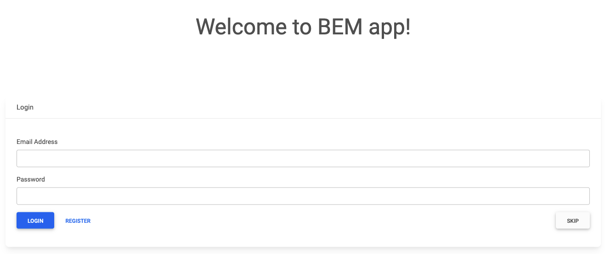
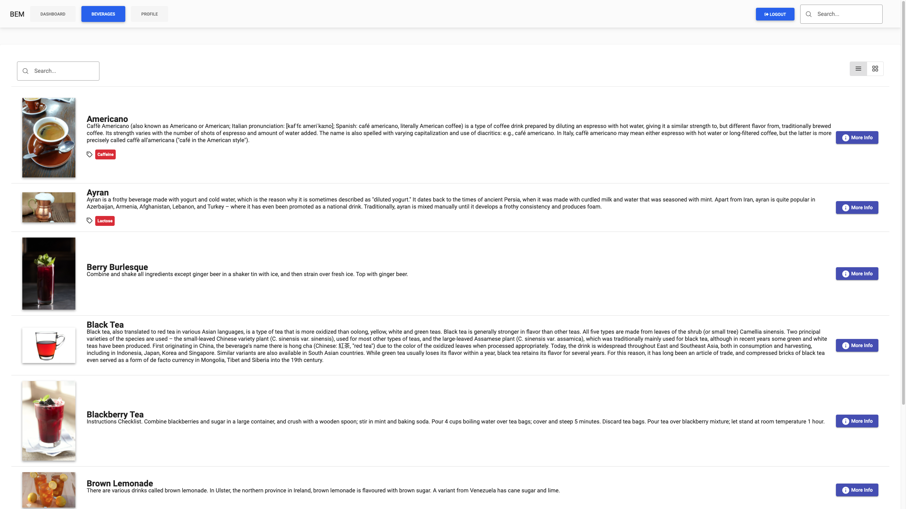
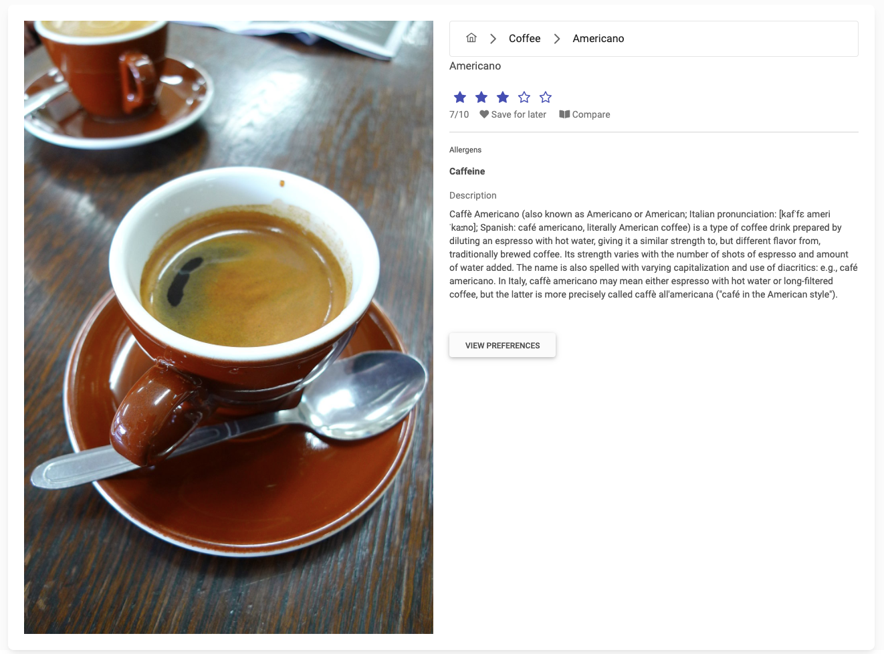
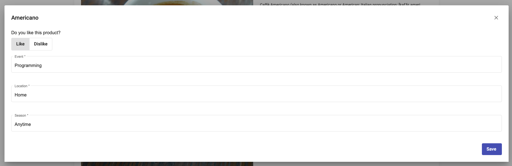
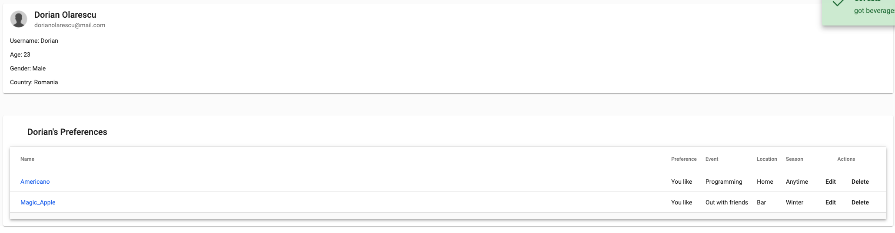
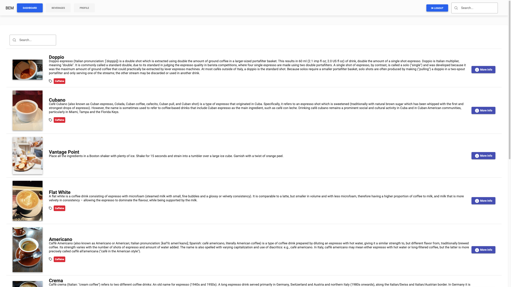
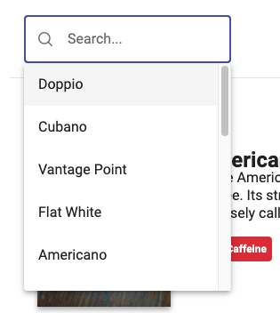
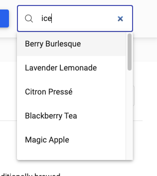

Facultatea de Informatică - Universitatea Alexandru Ioan Cuza
Abstract - What is BEM
This report serves as a user-guide for the Beverage Manager Web Application,
showcasing three use-cases of the service.
The purpose of the application is the discovery of new non-alcoholic beverages where
the user can specify his or her feelings about a certain beverage, and the app will take
that into consideration with meaningful recommandations.
Startup
When accessing the web application for the first time, you are greeted with a login screen.
On this page, you can either sign into the application using an account you've previously created,
you can register for a new account, or simply you can skip the login page altogether bringing you to the beverages page
where you can view all the beverages provided by the application. All beverages feature beautiful thumbnails
that provide the user with visual information about the beverage.
Using the application without an account
The application is built to work even if you don't have an account. This feature is specifically built
in order to provide anyone with useful information about non-alcoholic beverages.
As stated above, if you click the "Skip" button, you are immediately taken to the full beverage list where you can
get an overview of all the beverages provided by the application. You can even get into detail by clicking the "More Info" button next to each
beverage. There you are taken to the product page where you can see the full path of the beverage,
the allergens of a certain beverage as well as a short description about the beverage. Note that all beverages have a description
but the description message differs from beverage to beverage. Some descriptions offer information about the beverage history while
others offer tutorials on how to make them!
After viewing the beverages, you can continue to navigate as such, or create and account
and discover a world of recommandations.
Sign up
If you've decided to signup in the application, you are required to fill in a form with basic information such as
nationality, gender and more. After filling in the information, and setting up a password you are ready for
the next step, loggin in.

Signup page
Log in
The login process is quick and easy if the you have an account. Just enter the email address used for the registration
process and the password created and voilá! You are now ready to experience the BEM application.

Login page
Beverage Listing
After succesfully logging in or entering with an account you can view all the beverages the app has to offer.
You can change the aspect of the list, from, well, a list to a grid view, you can filter beverages using the seach bar
right above the list or you can navigate through each page browsing for beverages.

Beverages page
Beverage Details
The beverage details page is the place to look for everything about that beverage. You can see a bigger image, you can see the beverage description,
the path to that beverage so you get a sense of where you are and, of course, if you are logged in, you can set or edit you preferences for this beverage.
This helps in finding other beverages that you might like based on this, and maybe previous preferences.

Beverage Detail page
Beverage Preferences
Here you can add your own preferences for that beverage. It is a crucial aspect of the application because this is the way you can get personalized
recommandations. It is after these preferences our app looks for the best beverages you might like.

Beverage Preference Modal
Profile Page
In the preference page you can see your account and all the data you've submitted. Also, if you've stated your preference for a beverage, or multiple ones, you
can find all of them here. You can click on the beverage to see why you've set a preference, you can edit the preference if you think it no longer reflects your opinion,
or you can even delete the preference.

Profile Page
Dashboard Page
In the dashboard page you can see your preferences come alive! Here is a list of recommended beverages based on your own preferences. You can find new drinks to try out,
or see the ones you've already likes. The interface is the same as in the beverages page, with a show more button taking you to the beverage details page so you can either
see information about the beverage, or add/edit preferences for that beverage.

Dashboard Page
Smart Searching
Smart searching is only "smart" if you've taken the time to add some preferences. Otherwise you get PLOBS (Plain Old Boring Search!) and you get an autocomplete with all
the beverages name. If you've set some preferences, the search bar shows you only relevant results based on the feedback you've given to beverages.

Autocomplete Search Based on Preferences
Global Search
Global search is different than Smart Search (or PLOBS for that matter) because it searches throughout the application not after the beverage title, but rather after
the beverage description. It's done that way in order to provide a simple search based on an ingredient maybe, or a location that the beverage description
might contain and you might be interested about.

Global Autocomplete Based on Beverage Comment
Use Cases
The BEM application provides multiple use cases. We'll take a look at four of them
Beverage Discovery
The app can be used to simply discover beverages by using it without an account. You can get all the information
needed, without recommandations. Browse and glance at multiple drinks, learning some trivia, finding out how they
can be made.
User Recommandations
A user can see recommended beverages based on previous set preferences, so he can discover new and interesting beverages
that he might like (most probably).
Category Browsing
What if you have a certain beverage in mind and you'd like to see similar beverages? Well, you can use the app and from the
beverage details page just click on the route for the parent. You'll be taken to a filtered list based on that drink's category.
Description Searching
If you are interested in finding out what goes with, maybe, a certain food or at a certain event, you can use the Global Search
feature to look inside each beverage description. =